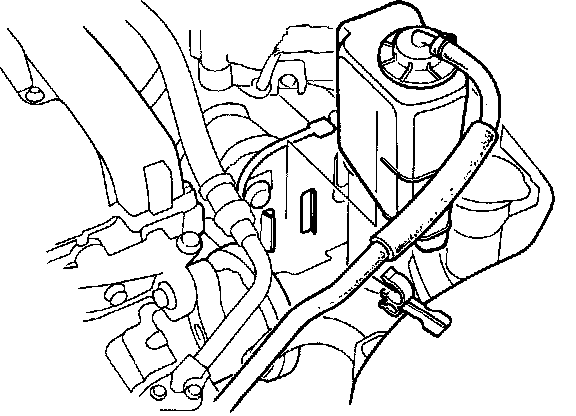
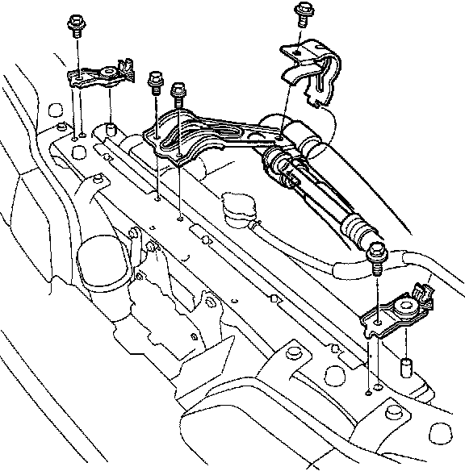
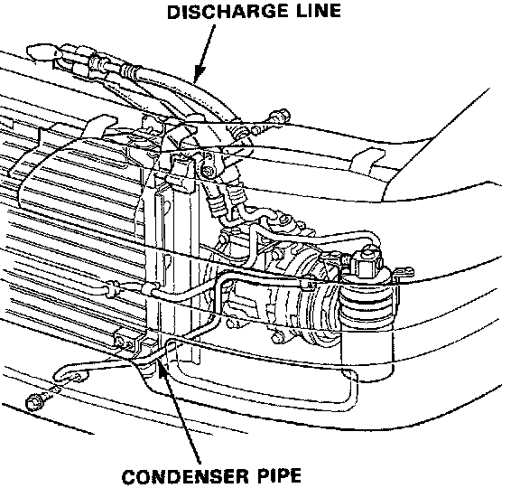
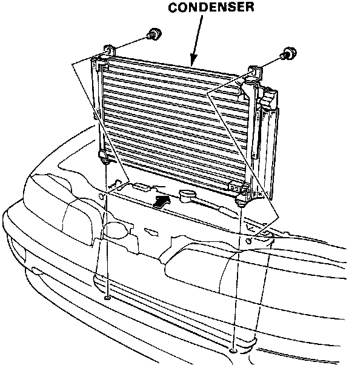

Condenser HVAC: Service and Repair
Condenser Replacement1. Discharge the refrigerant.
2. Disconnect the engine ground cable.

3. Remove the radiator reservoir tank and the air intake tube.

4. Remove the A/C hose stay and the radiator upper mounting bracket.

5. Disconnect the condenser pipe and discharge pipe from the condenser.
CAUTION: Cap the open fittings immediately to keep moisture and dirt out of system.

6. Remove the mounting bots (2) and condenser.
7. Install in the reverse order of removal, charge the system and test performance.